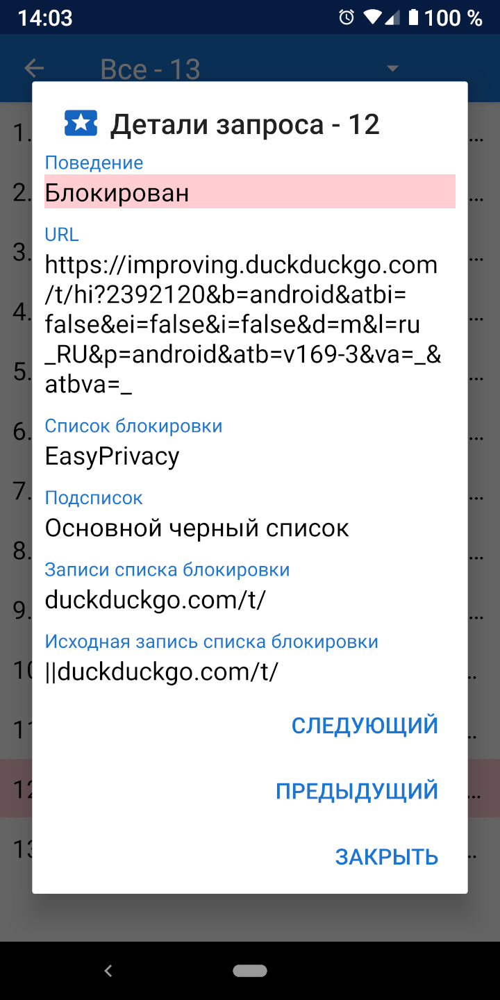

При загрузке URL-адреса обычно происходит ряд запросов ресурсов для CCS, JavaScript, изображений и других файлов. Сведения об этих запросах можно просмотреть в активности запросов. В навигационном меню имеется ссылка на активность запросов, а также показано, сколько запросов было заблокировано. При нажатии на запрос отображаются сведения о том, почему он был разрешен или заблокирован.

Privacy Browser включает в себя четыре распространенных списка блокировки, основанных на синтаксисе Adblock: EasyList, EasyPrivacy, Fanboy’s Annoyance List, и Fanboy’s Social Blocking List. Эти списки блокировки обрабатываются Privacy Browser в следующих 22 подсписках, которые проверяют запросы ресурсов в указанном порядке.
Исходные списки проверяются на начало URL-адреса. Окончательные списки проверяются на конец URL-адреса. Списки доменов проверяют только определенные домены. Сторонние списки применяются только в том случае, если корневой домен запроса отличается от корневого домена основного URL-адреса. Списки регулярных выражений следуют за синтаксисом регулярных выражений. Каждый элемент подсписка имеет одну или несколько записей. В случае подсписков домена, запрос ресурса проверяется только в отношении элемента, если первая запись соответствует домену основного URL-адреса.
Из-за ограничений в Android WebView, а также для ускорения обработки запросов, в Privacy Browser реализована упрощенная интерпретация синтаксиса Adblock. Иногда это может привести к ложным срабатываниям, когда ресурсы разрешаются или блокируются способами, которые не были предназначены для исходной записи. Более подробное описание способа обработки записей списка блокировки доступно на stoutner.com.
Privacy Browser имеет два дополнительных списка блокировки, один из которых UltraPrivacy,
предназначеный для блокировки трекеров, которые EasyPrivacy разрешает, а другой блокирует все сторонние запросы.
Например, если www.website.com загружает изображение с сайта images.website.com,
запрос не будет считаться сторонним и не будет заблокирован, так как они оба используют один и тот же базовый домен website.com.
Блокировка всех сторонних запросов увеличивает конфиденциальность, но этот список блокировки по умолчанию отключен, поскольку он ломает большое количество веб-сайтов.